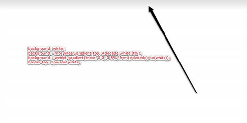

CSS3 radial gradient:
浏览器参照基准：Firefox3.6 and Later, Chrome5 and Later, Safari5 and Later, Opera10.53 and Later, IE9.0 and Later
语法：
.selector{
background:-moz-radial-gradient(10% 30%, white, black);/*gradient for firefox*/
background:-webkit-radial-gradient(10% 30%, white, black);/*new gradient for webkit */
background:-webkit-gradient(radial, 0 10%, 0 30%, from(#white), to(#black));/*the old grandient for webkit*/
}
不要担心这些语法会让你看花眼，我也是这样的！只要记得我们需要用一个逗号来隔开这个参数组。
- 渐变的类型? (linear)
- 渐变开始的X Y 轴坐标(0 0 – 或者left-top)
- 渐变结束的X Y 轴坐标(0 100% 或者left-bottom)
- 开始的颜色? (from(red))
- 结束的颜色? (to(blue))
Firefox浏览器语法：
-moz-linear-gradient( [<point> || <angle>,]? <stop>, <stop> [, <stop>]* )
background: -moz-linear-gradient(top, red, blue);
background: -moz-linear-gradient(top, red, blue);
- 请注意我们将渐变的类型——linear——放到了属性前缀中了
- 渐变从哪里开始? (top – 我们也可以使用度数，比如-45deg)
- 开始的颜色? (red)
- 结束的颜色? (blue)
Color-Stops：
如果你不需要从一个颜色到另一个颜色的100%渐变怎么办？这就是color stop起作用的时候了。一个普遍的设计技术是使用一个较短而细微的渐变，比如：
注意顶部的浅灰色到白色的细小的渐变
在过去，标准的做法就是制作一个图片，并将其设为一个元素的背景图片，然后让其水平平铺。然而使用CSS3，这是个小Case。
background: white; /* 为较旧的或者不支持的浏览器设置备用属性 */
background: -moz-linear-gradient(top, #dedede, white 8%);
background: -webkit-gradient(linear, 0 0, 0 8%, from(#dedede), to(white));
border-top: 1px solid white;这次，我们让渐变结束于8%，而不是默认的100%。请注意我们也在头部采用了一个边框，以形成对比。这很常用。
如果我们想要添加多一种(几种)颜色，我们可以这样做：
background: white; /* 备用属性 */
background: -moz-linear-gradient(top, #dedede, white 8%, red 20%);
background: -webkit-gradient(linear, 0 0, 0 100%, from(#dedede), color-stop(8%, white), color-stop(20%, red);- 对于-moz 版本，我们定义，从元素的20%的高度的地方开始是红色。
- 而对于-webkit，我们使用color-stop，采用两个参数：哪里开始停止，使用哪种颜色。